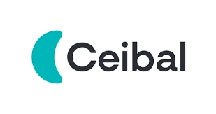
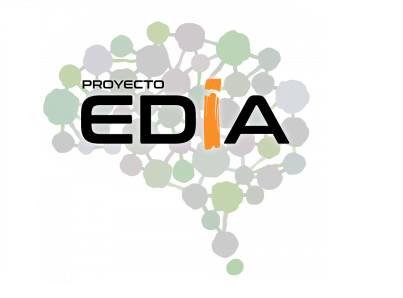

Recursos Educativos Para Compartir (REDUPAC) es un REA hacen referencia a materiales de enseñanza-aprendizaje, mayormente en soporte digital, de licencia abierta lo que implica su gratuidad y también su adaptación y redistribución. Este entorno pretende ser un espacio de uso común, en donde poder generar recursos de forma conjunta.
| Logo | Recurso | Autor |
|---|---|---|
| Procomún | INTEF |  | Rea Ceibal | Ceibal Educación |
| Connexions (CNX) | Rice University | |
| OER Commons | Institute for de Study of Knowledge Manafement in Education | |
| Curriki | CurriKi | |
|  | Proyecto EDIA | Centro Nacional de Desarrollo Curricular en Sistemas no Propietarios (CEDEC |
Ahora que ya tenemos claro qué son los REA, vamos a centrarnos en conocer dónde encontrar REA.
Como ya hemos visto, una forma fácil de buscar recursos libres en Internet es el uso de motores de búsqueda generales,
aplicando filtros específicos o en bancos de imágenes, audios y vídeos con licencia CC: